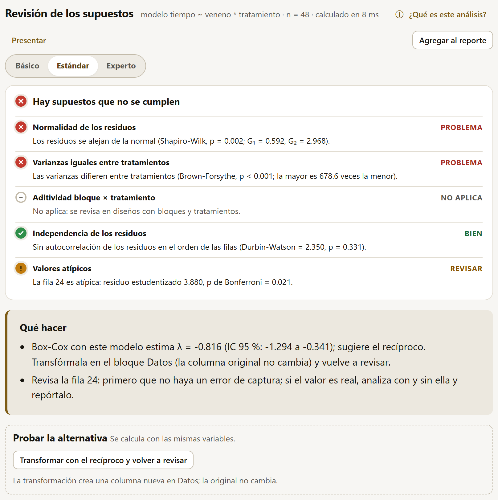
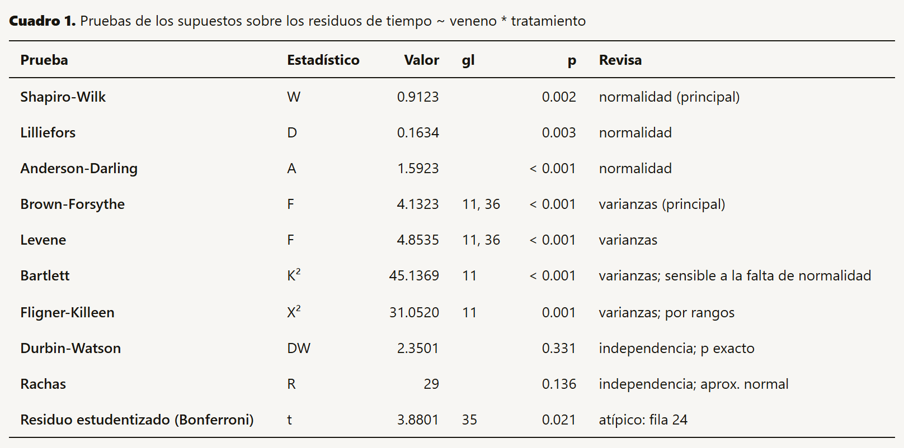
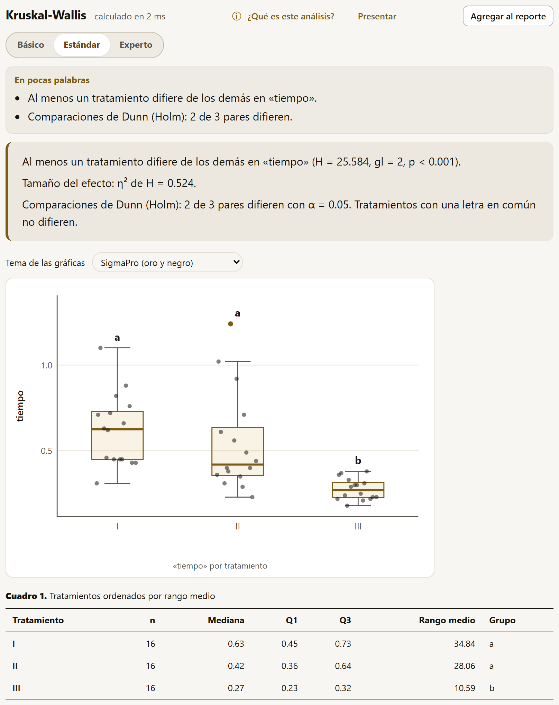

4.7Los supuestos del modelo
El análisis de varianza, las comparaciones de medias y la regresión descansan en supuestos sobre los residuos (lo que el modelo no explica): que se distribuyan como una normal, que tengan la misma varianza en todos los tratamientos, que sean independientes entre sí y que ninguno sea extremo. Revisar los supuestos del modelo, el primer método del catálogo, los pone a prueba todos a la vez y dice qué hacer si alguno falla.
| Opción | Qué decide |
|---|---|
| Variable de respuesta | La respuesta del modelo. |
| Tratamientos (hasta 3, cruzados) | Los factores; las varianzas se comparan entre sus combinaciones. |
| Bloques | El bloque, si lo hay (— sin bloques — si no). Con bloques se revisa además la aditividad bloque × tratamiento. |
| Orden para la independencia | En qué orden se buscan residuos vecinos parecidos: — el de las filas — o el de una columna numérica o de fechas (la posición en el campo, la fecha de medición). |
| Nivel de significancia | El α de las pruebas (0.05, 0.01 o 0.10), que también fija los cortes de los colores del semáforo. |
La revisión ajusta el modelo respuesta ~ bloque + A * B * C con lo elegido; la cabecera del resultado lo escribe, con el número de residuos (n), y una línea avisa cuántas filas con algún faltante no entran.
![La revisión de los supuestos del maíz: la cabecera con el modelo rend ~ bloque + hibrido * dosis, n = 48, y los botones ¿Qué es este análisis? y Agregar al reporte; el semáforo en verde con normalidad (Shapiro-Wilk p = 0.366), varianzas iguales (Brown-Forsythe p = 0.538), aditividad (Tukey p = 0.671), independencia (Durbin-Watson = 1.981, p = 0.331) y valores atípicos en BIEN; qué hacer; y las tres gráficas: Q-Q normal de los residuos con su banda, residuos contra valores ajustados y residuos en el orden de las filas](../img/b4-sup-verde.png)
La revisión admite tratamientos y un solo factor de bloque: revisa bien los diseños completamente al azar, en bloques y sus factoriales. En un cuadro latino (pon una de las dos direcciones en Bloques), un látice o unas parcelas divididas la revisión es aproximada, porque no separa los otros bloqueos ni el error de la parcela grande; tampoco acepta covariables. Al agregar al reporte (capítulo 5) un diseño completamente al azar o en bloques completos, el reporte le agrega por su cuenta el semáforo de esta revisión, con el mismo modelo. La ficha de cada análisis en Fundamentos (capítulo 9) dice, supuesto por supuesto, cómo revisarlo aquí y qué alternativa usar si falla.
El semáforo
Arriba del resultado, un renglón por supuesto, cada uno con su color, su ícono (✓ bien, ! revisar, ✕ problema, – no aplica), su estado y una frase con la prueba que lo decide. El ícono y la palabra dicen lo mismo que el color, para que no haga falta distinguir los colores. El color global es el del peor renglón: Los supuestos se cumplen, Hay supuestos que revisar o Hay supuestos que no se cumplen.
| Supuesto | Prueba que decide | También se calculan |
|---|---|---|
| Normalidad de los residuos | Shapiro-Wilk (de 3 a 5000 residuos; con más, Anderson-Darling) | Lilliefors, Anderson-Darling; la asimetría G₁ y la curtosis G₂ |
| Varianzas iguales entre tratamientos | Brown-Forsythe (Levene con la mediana) | Levene, Bartlett (sensible a la falta de normalidad), Fligner-Killeen (por rangos); cuántas veces es la mayor varianza la menor |
| Aditividad bloque × tratamiento | No aditividad de Tukey (con bloques) | — |
| Independencia de los residuos | Durbin-Watson, contra la autocorrelación positiva; p exacto con menos de 100 residuos | Rachas arriba y abajo de la mediana (p exacto con menos de 30 residuos) |
| Valores atípicos | El mayor residuo estudentizado, con p de Bonferroni | — |
Los colores siguen el valor p de la prueba principal y el α elegido: verde si p ≥ α (BIEN), ámbar si queda entre α/5 y α (REVISAR) y rojo si p < α/5 (PROBLEMA). Con α = 0.05, los cortes son 0.05 y 0.01. Un renglón en gris dice NO APLICA (la aditividad sin bloques; las varianzas sin tratamientos o con algún tratamiento de una sola observación) o que hay muy pocas observaciones para la prueba.
La normalidad tiene una excepción: con 50 residuos o más y una forma casi normal (|G₁| < 0.5 y |G₂| < 1), el renglón no pasa de ámbar aunque la prueba rechace, y su frase dice que la desviación es pequeña. Con tantos datos cualquier desviación resulta significativa y el análisis de varianza la tolera.
Qué hacer
Debajo del semáforo, el recuadro Qué hacer traduce el resultado en acciones concretas. Cada recomendación aparece solo cuando se cumple su condición:
| Cuándo | Qué propone |
|---|---|
| Todo en verde | Que el análisis de varianza y las comparaciones de medias serán confiables. |
| Falla la normalidad o las varianzas y la respuesta es positiva | La transformación de Box-Cox estimada con el mismo modelo (λ con su intervalo de 95 %) y la transformación sencilla que le corresponde (raíz cuadrada, logaritmo, recíproco de la raíz, recíproco…), para hacerla en el bloque Datos (sección 2.9) y volver a revisar. |
| Falla la normalidad o las varianzas y la respuesta son conteos (enteros no negativos) | √(x + 0.5), o un modelo de Poisson o binomial negativo (sección 4.17). |
| Falla la normalidad o las varianzas y la respuesta es un porcentaje (el nombre de la columna lo dice y los valores van de 0 a 100) | El arcoseno de la raíz, o un modelo binomial con el total de cada fila (sección 4.17). |
| Varianzas distintas con un solo factor y sin bloques | Comparar las medias con Games-Howell (sección 4.11) o usar Kruskal-Wallis (sección 4.9): ninguna supone varianzas iguales. |
| Varianzas distintas con varios factores o bloques, sin Box-Cox posible | Transformar la respuesta; un modelo con varianzas distintas por tratamiento aún no está en SigmaPro. |
| Falla solo la normalidad | Con 30 residuos o más, que el análisis de varianza es robusto a esa falta de normalidad; con menos, comparar con Kruskal-Wallis o, con bloques, Friedman (sección 4.9). |
| Falla la aditividad | El logaritmo (vuelve aditivo un efecto multiplicativo) o, con repeticiones dentro de cada bloque, incluir la interacción en el modelo. |
| Falla la independencia | Revisar el orden de las filas; bloques más chicos (el análisis espacial aún no está en SigmaPro). |
| Hay un atípico | Revisar esa fila: primero que no sea un error de captura; si el valor es real, analizar con y sin ella y reportarlo. |
Con los venenos de Box y Cox, por ejemplo, la normalidad y las varianzas fallan y hay un residuo atípico (figura 4.17): la app estima la transformación de Box-Cox con ese mismo modelo (λ = −0.816, intervalo de −1.294 a −0.341), sugiere el recíproco y recuerda que la columna original no cambia; para la fila 24, propone revisar primero que no sea un error de captura. Si se revisa solo el veneno, sin el tratamiento, el modelo queda de un factor y las varianzas salen en ámbar (Brown-Forsythe, p = 0.021): entonces el recuadro agrega Games-Howell y Kruskal-Wallis.
Probar la alternativa
Cuando algún renglón del semáforo falla, debajo (en esta revisión, debajo de Qué hacer) aparece el recuadro Probar la alternativa, con un botón por remedio. Cada botón corre el análisis que atiende el supuesto, con las mismas variables; los números del resultado anterior no cambian, y se vuelve a él eligiéndolo en el catálogo. Los botones dependen del análisis:
| Análisis | Cuándo | Qué corre el botón |
|---|---|---|
| Revisión de los supuestos | Fallan la normalidad o las varianzas y Box-Cox propone una transformación | Crea la columna transformada en Datos (ln_, raiz_, inv_ o bc_ más el nombre de la respuesta) y vuelve a revisar con ella. |
| … y la respuesta son conteos | Los modelos de conteos con la familia que elija la sobredispersión (sección 4.17). | |
| Con un solo factor: varianzas distintas, o normalidad con menos de 30 residuos | Kruskal-Wallis, o Friedman si hay bloques (sección 4.9); con varianzas distintas y sin bloques, también Games-Howell (sección 4.11). | |
| Prueba t | Varianzas distintas con la t de Student | La t de Welch. |
| Falla la normalidad | Wilcoxon: de Mann-Whitney con dos grupos, de rangos con signo con una muestra o pareada (sección 4.9). | |
| Regresión lineal y polinomial | Fallan la normalidad o la varianza constante | Con la respuesta positiva, su logaritmo en una columna nueva y el ajuste otra vez; con conteos, el modelo de conteos con los predictores como covariables (hasta dos). |
| Falla la forma, con un predictor | La regresión polinomial de grado 2. | |
| Colinealidad, con tres o más predictores | Los mejores subconjuntos (sección 4.12). | |
| Modelos generalizados | Sobredispersión con la Poisson o la binomial | La binomial negativa o la cuasibinomial. |
| Modelos mixtos y medidas repetidas | Fallan la normalidad o las varianzas y la respuesta es positiva | Su logaritmo en una columna nueva y el ajuste otra vez. |
La columna transformada se crea una sola vez: si ya existe con la misma transformación, se usa esa. Un aviso dice su nombre, y la original no cambia (sección 2.9). Con los venenos, Transformar con el recíproco y volver a revisar crea inv_tiempo y la revisión con ella sale con todos los renglones en verde, salvo la aditividad, que no aplica sin bloques. Los atípicos, la aditividad y la independencia no tienen botón: piden revisar los datos o el diseño.

Las gráficas y el cuadro
- Q-Q normal de los residuos estandarizados: si los residuos son normales, los puntos siguen la diagonal. La banda sombreada es la región de confianza; los puntos que salen de ella van marcados y los más alejados llevan su número de fila.
- Residuos contra valores ajustados: debe verse una nube sin forma. Un embudo (más dispersión con valores mayores) delata varianzas desiguales; las líneas en ±2 señalan los residuos grandes.
- Residuos en el orden de las filas o de la columna elegida: rachas largas de un mismo signo delatan dependencia (parcelas vecinas parecidas).
Arriba de las tres gráficas está el selector Tema de las gráficas, el mismo de los demás resultados (cuadro 6.1). Este resultado no lleva la franja de la suite LABG al pie: ninguna app de la suite continúa la revisión de los supuestos.
El cuadro 1 trae todas las pruebas, con su estadístico, su valor, sus grados de libertad, su p y qué revisa; la principal de cada supuesto va marcada como «(principal)», y la nota recuerda los cortes del semáforo. En Varianza de los residuos por tratamiento (plegado) está la varianza de cada combinación, para ver cuál es la que se aparta.

La prueba de Bartlett es muy sensible a la falta de normalidad: con residuos de colas pesadas rechaza la igualdad de varianzas aunque las varianzas sean iguales. La de Brown-Forsythe (la de Levene con la mediana en lugar de la media) es robusta a eso, y por eso decide el renglón; Bartlett queda en el cuadro como referencia. Por una razón parecida, con datos muy grandes conviene mirar las gráficas además de los valores p: con miles de residuos, desviaciones mínimas de la normal ya resultan significativas (de ahí la excepción de la normalidad con 50 residuos o más).
4.8Pruebas t
La Prueba t compara medias en tres situaciones, que elige Tipo de comparación:
| Tipo | Qué pide | Ejemplo |
|---|---|---|
| Dos grupos independientes | La Variable de respuesta, la Columna de los grupos y, si esa columna tiene más de dos niveles, los que se comparan en Grupo 1 y Grupo 2. | Tiempo de supervivencia con los tratamientos A y B. |
| Mediciones pareadas | La Primera medición y la Segunda medición, dos columnas medidas en las mismas unidades (cada fila, una unidad); se compara primera − segunda. | Altura de la misma planta a los 15 y a los 30 días. |
| Una muestra contra un valor | La Variable y el Valor de referencia (μ₀). | ¿La germinación media difiere del 50 %? |
Las demás opciones: la Diferencia bajo H₀ (en dos grupos y en pareadas; normalmente 0), la Hipótesis alternativa (Bilateral (≠), Menor (<) o Mayor (>)), el Nivel de confianza del intervalo (95, 99 o 90 %), el Nivel de significancia y, con dos grupos, la casilla Suponer varianzas iguales (t de Student). Sin marcar, se usa la t de Welch, que no supone varianzas iguales y es la recomendada: con varianzas iguales da casi lo mismo que la de Student, y con varianzas distintas sigue siendo válida.
![La prueba t de Welch con los venenos, tratamientos A y B: el formulario con tipo de comparación, variable de respuesta tiempo, columna de los grupos, grupos A y B, diferencia bajo H0, hipótesis bilateral, confianza 95 % y la casilla de varianzas iguales sin marcar; el resultado: la media de A (0.314) difiere de la de B (0.677), diferencia −0.362, t = −3.729, gl = 13.21, p = 0.002; tamaño del efecto grande, g de Hedges −1.470; el semáforo de normalidad y varianzas; el selector del tema de las gráficas y la gráfica de cajas de los dos grupos con sus puntos y su media](../img/b4-t.png)
El resultado trae:
- la conclusión con las dos medias, la diferencia y su intervalo, y t, gl y p;
- el tamaño del efecto en palabras, según la g de Hedges y la guía de Cohen: muy pequeño (menos de 0.2), pequeño (desde 0.2), mediano (desde 0.5) o grande (desde 0.8). En pareadas se calcula sobre las diferencias (dz) y en una muestra, contra el valor de referencia;
- el semáforo: la normalidad de cada grupo (o de las diferencias, en pareadas) por Shapiro-Wilk y, con dos grupos, la comparación de las varianzas con la prueba F. Con la t de Welch, ese renglón (Varianzas (t de Welch)) queda en verde aunque las varianzas difieran, porque Welch no las supone iguales; con la de Student (Varianzas iguales) se colorea según la F y, si difieren, Probar la alternativa corre la de Welch (si falla la normalidad, Wilcoxon);
- la gráfica de los valores de cada grupo (en pareadas, de las diferencias), con la caja de cuartiles y la media; en pareadas y en una muestra, una línea discontinua marca el valor de referencia;
- los cuadros: la prueba elegida (con dos grupos, la otra t abajo como referencia), las medias y desviaciones, y el tamaño del efecto: la d de Cohen y la g de Hedges (la d corregida por el sesgo de las muestras chicas), con intervalos por la t no central (Steiger y Fouladi, 1997).
Con los tratamientos A y B de los venenos, las varianzas difieren mucho (F = 0.102, p < 0.001). Con Welch, la prueba usa 13.21 gl (p = 0.002) y el renglón de las varianzas dice que sigue siendo válida; si se marca la casilla de Student, la prueba usa 22 gl (p = 0.001) y el mismo renglón sale en rojo con «Conviene la t de Welch, que no las supone iguales».
Con tres tratamientos o más, comparar de dos en dos con pruebas t infla la probabilidad de encontrar diferencias que no existen. El camino es el análisis de varianza del diseño (sección 4.10) seguido de una comparación de medias que controle ese error (sección 4.11).
4.9Pruebas no paramétricas
Cuando los datos no cumplen la normalidad y una transformación no la logra, o cuando la respuesta es una escala ordenada (daño de 1 a 5, una calificación), las pruebas de rangos comparan grupos sin suponer una distribución. Ordenan todos los valores y trabajan con su posición. SigmaPro calcula sus distribuciones exactas cuando el tamaño lo permite, como R. Ninguna de las tres trae semáforo.
| Prueba | Equivale a | Cuándo |
|---|---|---|
| Wilcoxon y Mann-Whitney | La prueba t | Dos grupos independientes (suma de rangos, Mann-Whitney), dos mediciones pareadas o una muestra contra un valor (rangos con signo). |
| Kruskal-Wallis | El ANOVA completamente al azar | Tres o más tratamientos sin bloques. |
| Friedman | El ANOVA en bloques | Tres o más tratamientos con un dato de cada uno en cada bloque (parcela, juez, fecha). |
Wilcoxon y Mann-Whitney
El formulario es el de la prueba t (sin la casilla de las varianzas), con dos opciones más: Valor p (Exacto si se puede, Exacto o Aproximación normal) y Corrección por continuidad, marcada de entrada, para la aproximación normal. Con Exacto si se puede, el p exacto se usa con menos de 50 datos por grupo y sin empates (ni diferencias iguales al valor de referencia, en los rangos con signo), como en R; con empates la app usa la aproximación normal aunque se pida el exacto, y la nota del cuadro dice cuál se usó.
El resultado da el estadístico (W en dos grupos, V en pareadas y una muestra), el p y, como medida del efecto, el estimador de Hodges-Lehmann del desplazamiento entre los grupos (la mediana de todas las diferencias entre un valor de cada grupo; en pareadas y una muestra, la seudomediana) con su intervalo, más un cuadro de medianas y cuartiles y una gráfica de cajas. Si con tan pocos datos el intervalo no alcanza la confianza pedida, una nota dice cuál alcanza. Con los tratamientos A y B de los venenos, que tienen empates: W = 20.5, p = 0.003, y un desplazamiento de −0.360 (IC 95 %: −0.610 a −0.090), con la aproximación normal corregida por continuidad y por empates.
Kruskal-Wallis

Se eligen la Variable de respuesta, los Tratamientos, el método de Comparaciones por pares (Dunn, Conover-Iman o Nemenyi) y el Ajuste de los valores p por las comparaciones múltiples: Holm (de entrada), Bonferroni, Benjamini-Hochberg (FDR) o Sin ajuste; con Conover-Iman, también Tukey (un paso). Nemenyi no pide ajuste: su p ya sale del rango estudentizado. El resultado da H con sus grados de libertad y su p (corregido por empates), el tamaño del efecto η² de H, y las comparaciones: el cuadro Tratamientos ordenados por rango medio, con la mediana, los cuartiles y sus letras (tratamientos con una letra en común no difieren), que también aparecen sobre la gráfica, y el de cada par, con la diferencia de rangos medios, el estadístico, el p sin ajustar y el ajustado.
Friedman
Pide además la columna de los Bloques, con un dato por tratamiento en cada bloque. Las comparaciones por pares pueden ser de Conover, Nemenyi o Wilcoxon pareada, con los mismos ajustes; Tukey (un paso) solo con Conover. Además de χ² y su p, da la W de Kendall, la concordancia entre bloques (de 0, ninguna, a 1, todos los bloques ordenan igual a los tratamientos), y el cuadro de los tratamientos ordenados por su suma de rangos, con sus letras.
Los datos tienen que formar una tabla completa de bloques por tratamientos:
- Un bloque con la respuesta vacía en algún tratamiento queda fuera, como en R, y una nota dice cuántos. Con los trips del aguacate, dos de los seis bloques tienen una parcela sin dato: la prueba usa los otros cuatro (χ² = 8.308, gl = 4, p = 0.081; W = 0.519) y la gráfica muestra solo esos bloques.
- Si falta la fila de alguna combinación de bloque y tratamiento, la app se detiene: «Friedman necesita los mismos tratamientos en todos los bloques, y faltan combinaciones».
- Si un tratamiento tiene más de un dato en un bloque (repeticiones, o un factorial en bloques), también se detiene, y propone promediar las repeticiones de cada tratamiento en cada bloque en la hoja de cálculo, importar esa tabla de medias y volver a intentarlo. Es lo que pasa con el maíz si se piden los híbridos en bloques: cada bloque tiene cuatro parcelas de cada híbrido, una por dosis.
Las pruebas de rangos dicen si un grupo tiende a tener valores más altos que otro, no cuánto difieren sus medias, y con datos normales tienen algo menos de potencia que el ANOVA. Antes de recurrir a ellas conviene intentar la transformación que sugiere la revisión de los supuestos (sección 4.7), o un modelo lineal generalizado si la respuesta es un conteo o una proporción (sección 4.17).